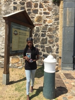
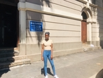
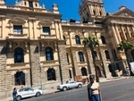

Historical places around Cape Town
Caste of Good Hope

- It took 13 years to build the Castle of good hope.
- You can see the jail cells as they were centuries ago.
- The building housed multiple services and businesses.
District six museum

The area known as District Six got its name from having been the Sixth Municipal District
of Cape Town in 1867.
Its earlier unofficial name was Kanaldorp, a name supposedly
derived from the the series of canals running
across the city,some of which had to be crossed in
order to reach the District
(kanaal is the Afrikaans for ‘canal’.)
District Six before its destruction under Apartheid, was a
community representative of diversity on a number
of levels – language, religion,
economic class, geographical area of origin – and became a living example
of how diversity could a be a strengthening characteristic of a community
and need not be feared.
City Hall

Cape Town's City Hall took five years to complete, after the laying of its cornerstone in 1900.
Nelson Mandela gave a speech from the balcony of City Hall immediately upon his release from prison.
City Hall lies between Buitengracht and Darling Streets, its forecourt,
known as Grand Parade, the scene of many military and political gatherings
whilst its balcony became notably famous when Nelson Mandela addressed 100 000 jubilant
people just hours after his release from prison, on 11 February 1990 (he was to borrow Winnie's
(his then wife, Winne Mandela) glasses to read, having left his in prison).